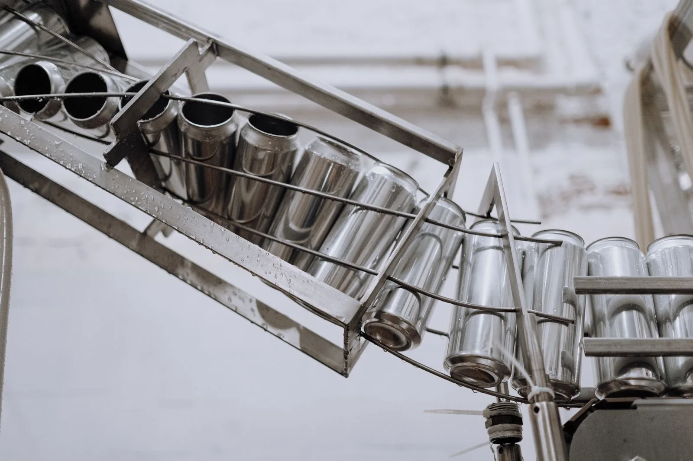

{{> title-meta title="Инженерный журнал" }} {{> head-css}} {{> navbar }}
К содержимому
Журнал о движении производства
Практика
Инженерная памятка
Как выбрать конвейер для вашей линии
Рекомендуем
Оборудование
Инженерная памятка
Что включить в техническое задание
Оборудование
Инженерная памятка
Когда подходит роликовая секция
Оборудование
Инженерная памятка
Как выбрать рабочую поверхность

Оборудование
Инженерная памятка
Как встроить секцию в готовую линию
Оборудование
Инженерная памятка
Обслуживание закладывается в проект
Оборудование
Инженерная памятка
Прямая линия или маршрут с поворотом
Оборудование
Инженерная памятка
Как подготовиться к модернизации
{{> footer }}